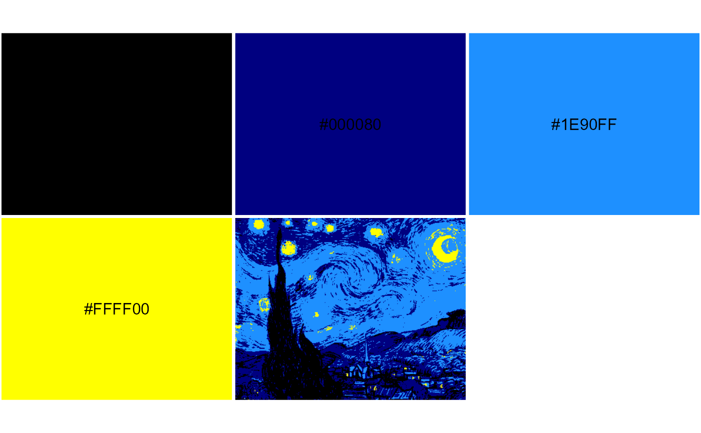

Quantize image colors by mapping all pixels to the nearest color in RGB space, respectively, given an arbitrary palette.
image_quantmap(
file,
pal,
pal2 = NULL,
k = 100,
plot = FALSE,
show_pal = TRUE,
labels = TRUE,
label_size = 1,
label_color = "#000000",
keep_asp = TRUE
)Arguments
- file
if character, file path or URL to an image. You can also provide an RGB array from an already loaded image file.
- pal
character, vector of hex colors, the color palette used to quantize the image colors.
- pal2
character, optional vector of hex colors, same length as
pal. After quantizing image topal, you can subsequently remappaltopal2.- k
integer, the number of k-means cluster centers to consider in the image. See details.
- plot
logical, plot the palette with quantized image reference thumbnail. If
FALSE, only return the RGB array.- show_pal
logical, show the palette like with
image_pal. IfFALSE, plot only the image; all subsequent arguments ignored.- labels
logical, show hex color values in plot.
- label_size
numeric, label size in plot.
- label_color
text label color.
- keep_asp
logical, adjust rectangles in plot to use the image aspect ratio.
Value
an RGB array with values ranging from 0 to 1
Details
The palette pal does not need to be related to the image colors.
Each pixel will be assigned to whichever color in pal that it is nearest to in RGB space.
You can use pal2 to remap to arbitrary colors after quantizing.
This function returns the new RGB array. You can plot a preview just like with image_pal using plot = TRUE.
The number of k-means centers k is for binning image colors prior to mapping the palette pal.
It is limited by the number of unique colors in the image. Larger k provides more binned distances between image colors and palette colors,
but takes longer to run.
See also
Examples
x <- system.file("blue-yellow.jpg", package = "imgpalr")
pal <- c("black", "navyblue", "dodgerblue", "yellow")
pal2 <- c("darkred", "darkgreen", "tomato", "orange")
a <- image_quantmap(x, pal, k = 7, plot = TRUE)

str(a)
#> num [1:317, 1:400, 1:3] 0 0 0 0 0 0 0 0 0 0 ...
a <- image_quantmap(x, pal, pal2, k = 7, plot = TRUE)